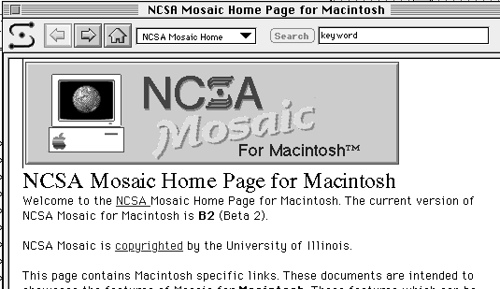
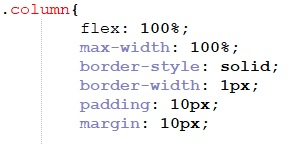
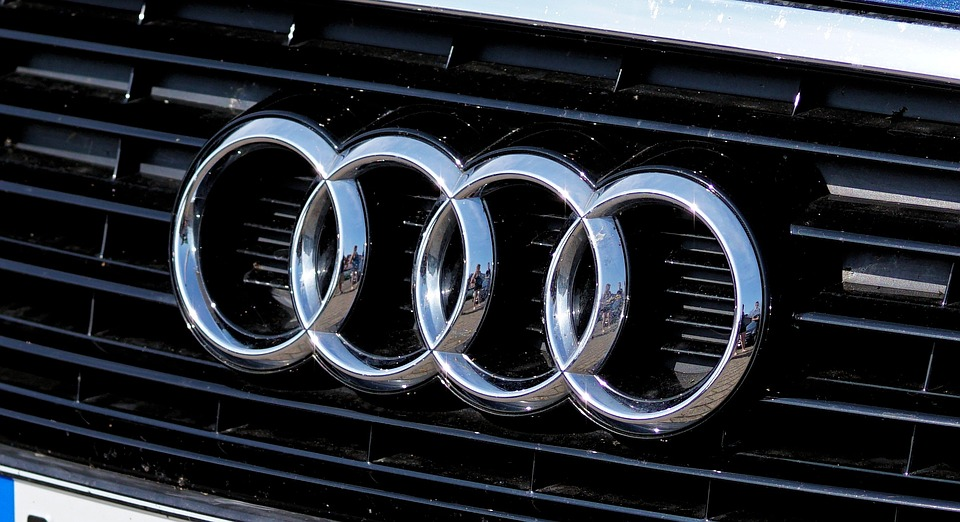
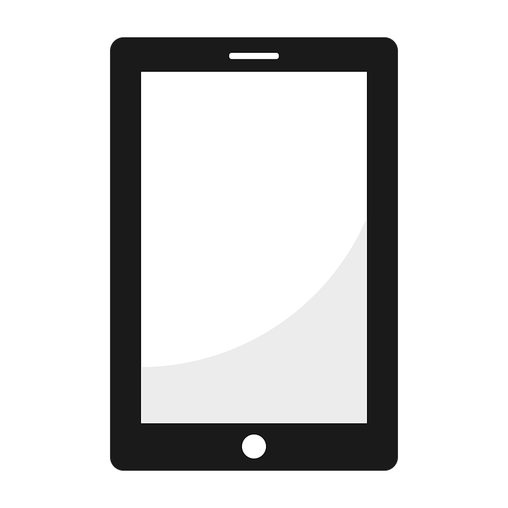

NCSA Mosaic
In het jaar 1993 werd de eerste grafische webbrowser uitgebracht die afbeeldingen op dezelfde pagina als de tekst kon afbeelden. Bij andere browsers moest dit voorheen door de afbeelding in een ander venster te openen. Door deze browser konden pagina’s nu zowel tekst als afbeeldingen tonen.
Screenshot door: George Brett
1993
Cascading Style Sheets
In 1997 werd de eerste versie van CSS uitgebracht waardoor het mogelijk werd om de styling van de pagina’s te scheiden van de rest van de HTML code. Na deze eerste versie van CSS kwamen er enkele versies waarin steeds meer functies werden toegevoegd waardoor het steeds makkelijker werd om de gehele lay-out en de manier waarop de website reageert op de resolutie van een beeldscherm aan te passen.
1997
Audi
Ver voordat het normaal werd om een website responsive te maken voor meerdere schermgroottes maakte in 2001 het automerk Audi al een website die op meerdere resoluties bekeken kon worden. De elementen die op de website zichtbaar waren paste zich aan naarmate de resolutie veranderde.
2001
Iphone
Door het uitbrengen van de eerste Iphone in 2007 werd het voor telefoons gemakkelijk om HTML websites te bezoeken. Hierdoor moesten website designers steeds meer rekening houden met mobiele apparaten. Door deze ontwikkeling werd er in de jaren hierna veel tijd en aandacht besteed aan het mobile friendly maken van websites. Dit hield in dat websites niet alleen werkend zouden zijn op één schermgrootte, maar nu op meerdere resoluties goed werken.

2007
Ipad
Toen de Ipad aan de consumentenmarkt tentoongesteld werd, wisten bedrijven dat hun websites ook op deze apparaten goed zouden moeten werken. Na de komst van de Ipad volgde nog veel meer tablets en de tablet werd ondertussen een goed alternatief voor een desktop. Vanaf 2010 moesten websites dan ook niet alleen gemaakt worden voor mobiele telefoons en desktops, maar werd het nu steeds gebruikelijker dat een bezoeker zich op een tablet bevindt. Hierdoor werd het nog belangrijker dat een website gebruik maakte van een responsive design dat zich aanpast aan een apparaat.
2010
Ethan Marcotte
In Seattle stond Ethan Marcotte op een podium om te spreken over responsive design, het idee dat mensen een website zouden maken die zich aanpast aan het apparaat. Mede hierdoor kwam er nog meer aandacht voor het responsive maken van websites om een groter publiek aan te trekken.
Foto door: Drew McLennan
2010
Year of Responsive Web Design
Een website die zich aanpast aan de resolutie van een beeldscherm werd gezien als een goed alternatief voor een app, hiernaast was dit vaak veel goedkoper. In dit jaar werd door Google besloten dat websites die responsive waren hoger in de zoekresultaten zouden komen. Dit werd ook wel The Year of Responsive Web Design genoemd.

2013
Mobile First
Voor het eerst in de geschiedenis van het Internet werd er in totaal meer door mobiele apparaten als desktops op het Internet gesurft. Dit is een belangrijk mijlpunt waaruit blijkt hoe belangrijk het is dat een website op mobiele apparaten werkt.